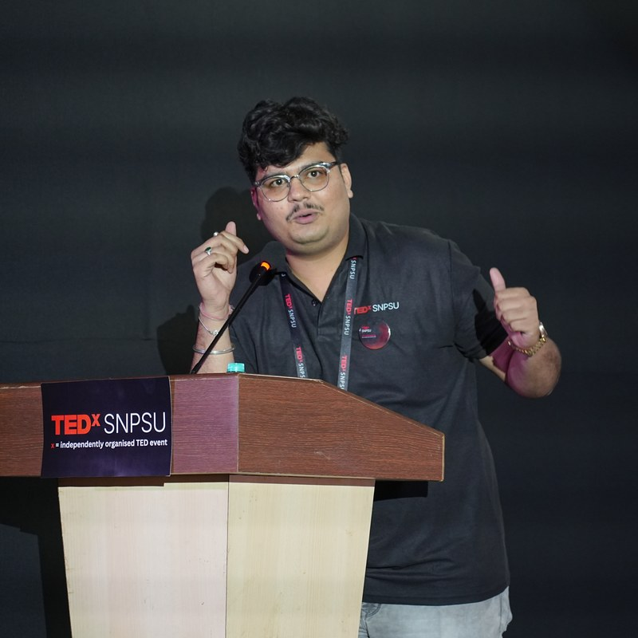
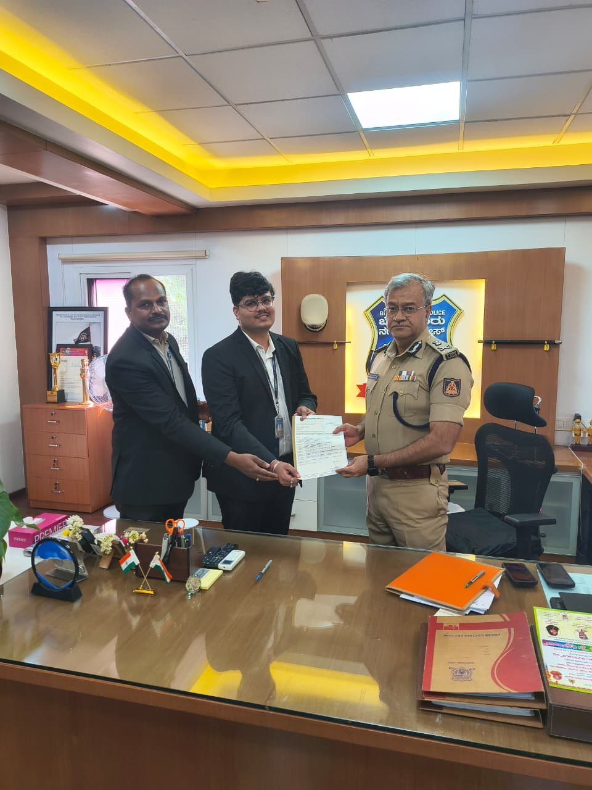

CNN Model for Facial Augmentation
Indian patent filed and published, covering a convolutional neural network model for facial augmentation, recognition and treatment-oriented analysis in clinical applications.
CNNComputer Vision
Software engineer, researcher, innovator, developer and event organizer — building at the intersection of artificial intelligence, biomedical engineering and healthcare innovation. From patented 3D bioprinting systems to AI radiology platforms, I make technology that treats real problems.

I'm a motivated, research-oriented engineer with a strong interdisciplinary focus spanning artificial intelligence, healthcare innovation, biomedical engineering, robotics, data analytics and public policy. My work is driven by one question: how can technology meaningfully improve health outcomes and solve societal challenges at scale?
That question has taken me from publishing research on CNN-based dermatological treatment systems, to filing 7 patents — 4 granted across India and the United States — to leading Team Vidyut in ISRO's STRC 2026 challenge, to founding and licensing TEDxSNPSU. I work across the full innovation pipeline — research, prototyping, intellectual property and technology commercialization — and I'm actively involved in national and international research programmes, including fellowship and innovation initiatives at the National University of Singapore.
Flagship innovation with four granted patents — two in India and two in the United States: an AI-integrated bioprinting device designed for dermatological applications including skin regeneration therapy, combining custom hardware, CNN-driven imaging and automated clinical workflows. Patent design valuation assessed at approximately ₹17 Crore through WIPO-based international IP valuation resources.
Indian patent filed and published, covering a convolutional neural network model for facial augmentation, recognition and treatment-oriented analysis in clinical applications.
Granted copyright protecting an AI-powered diagnostic model for radiological assessment and early disease detection.
Hands-on patent drafting and IP strategy; technology validation, evaluation and commercialization-oriented assessment; international valuation through WIPO resources.
Convolutional neural network architectures applied to automated 3D bioprinting workflows for skin regeneration and dermatological treatment.
Benchmarking and integration strategies for AI models across technological platforms.
Presented at a national conference hosted by the Indian Institute of Science, Bengaluru.
Presented at an international conference hosted by Delhi University.
AI-driven optimization, forecasting and decision systems across modern logistics and supply chain operations.
Machine-learning approaches to predictive modelling and AI-assisted diagnostics in clinical settings.
AI integration strategies for large-scale data modelling.
Applied AI technologies for dermatological diagnosis and treatment.
AI-integrated bioprinting system using CNN/U-Net architectures for skin regeneration, workflow automation and clinical decision support in vitiligo treatment.
AI-powered healthcare platform for early disease detection and diagnostic assistance from radiological imaging.
Built predictive machine-learning models for space applications as Team Leader of Team Vidyut in the national-level ISRO STRC 2026 challenge.
CNN-based models for facial recognition, augmentation analysis and treatment-oriented diagnostic applications.
AI-assisted web application for print-path planning, imaging and printer parameter configuration.
React-based platform for BioBridge, the cross-domain biomedical club I lead as President — supporting healthcare R&D initiatives on campus.
Designed and developed a drone prototype shortlisted for national-level competitions.
Obtained the TED license and built TEDxSNPSU from the ground up: organized two TEDx events (December 2025 and May 2026) plus two awareness pre-events, managing speaker coordination, sponsorship outreach and full event execution. Led digital campaigns that generated ~15.8 lakh impressions in 30 days.
Drove the establishment of an Apple Development Center on campus — making SNPSU among the earliest universities in India to host one — and championed industry–academia collaboration, incubation and startup culture in the university ecosystem.
Leading Team Vidyut in the national-level ISRO STRC 2026 challenge — managing machine-learning development, collaboration, planning and technical milestones.
Founded and lead BioBridge, a cross-domain biomedical engineering club uniting students from medicine, engineering and applied sciences — with a mission to promote healthcare R&D, interdisciplinary collaboration and student-led innovation.
Spearheaded robotics projects and mentored students across the university's research and innovation cell — organizing the Robotics Challenge, Future Innovator Challenge, BIS Awareness Camp, a Research Methodology Workshop, and a cross-disciplinary poster presentation bridging engineering and medical students.
Led planning and execution; secured prizes in multiple events. Also hosted the SCSCD Annual Day, winning first prize in event hosting.
Healthcare innovation and biomedical research initiatives, including Government of Maharashtra funding support for the 3-D Bioprinting for Dermatological Treatment project.
Prototype development, research, publications and project operations.
International exposure: chosen from over 2.68 lakh applicants for fellowship and innovation programmes at NUS, including selection into the FIERD Program — with ongoing participation in national and international research collaborations across healthcare, engineering and technology.
Trouble playing it here?
Open the video ↗Trouble playing it here?
Open the video ↗Trouble playing it here?
Open the video ↗
R-04 · PhotoPlus 13 completed Python courses and ongoing training programmes in AI, machine learning and innovation management.
Open to research collaborations, healthcare innovation projects, speaking engagements and interesting problems worth solving.